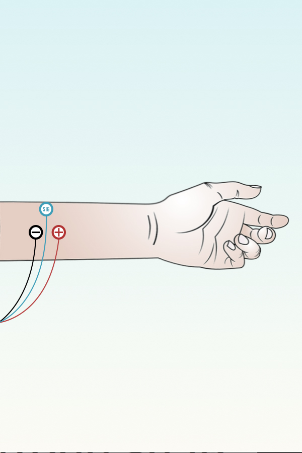

A topic I continue to focus on is the disconnect between how mental health and physical health are treated in hospitals, especially in pediatrics. Through my research I found that the best ways to improve a patients mental health while they are undergoing treatment for diseases that require months at a time in the hospital, is positive distractions that help their mental health as well as their physical health.
Problem
Once a patient is at the point of recovery and begins the physical therapy its not just their physical health but also their mental health that needs to rebuild but there is a disconnect in current treatment solutions which overlook the mental health.
Solution
A step toward bridging the disconnect could be a device that uses muscle sensors to test the patients physical strength and use that data to customize VR games and experiences to transport the patient out of the walls of the hospital while strengthening the weakest areas.
Solution
To familiarize myself with muscle sensors I started out with a MyoWare Muscle Sensor.
To communicate the set I made an illustration showing how to properly set up the sensor.

Once the sensor was set up it interacted witha game I programmed a in processing that moved the cone to the right of the screen the more the users muscles were engaged. If the user then started to relax their muscles the cone would move back to the left. The goal was catch as many of the falling ice cream cones.